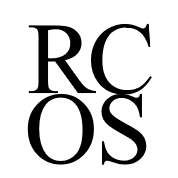
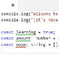

Professional
I work on Sway, a new Office app for web, Windows 10, and iOS for interactive reports, presentations, personal stories, and more.
At the moment I'm focusing on the web client's performance and improving our static code analysis.
Before Sway I worked on Dynamics CRM, in the sales vertical.
My team focused on integrating Azure machine learning and displaying the information in the desktop and mobile apps.
Projects
Most of my personal projects are in TypeScript. I'm particularly fond of remaking old NES games, contributing to TSLint, and the occasional React app.
-
FullScreenMario
I made FSM, an HTML5 remake of the original Super Mario Bros., in college. It had the original 32 levels, a procedural map generator, and a level editor. Nintendo shut it down with a couple of DMCA requests.
-
FullScreenPokemon
Now that FSM is publically dead I'm working on FSP, for Pokemon. It'll have the original 151 and campaign, a procedural map generator, and a level editor.
-

General Language Syntax
General Language Syntax (GLS) is an abstract syntax that compiles into common OOP languages. Write once, compile anywhere.
-
TSLint.MSBuild
MSBuild runner for TSLint.MSBuild as a NuGet package. Written in MSBuild.
-
Intern Assassins
Node+Express+MongoDB+React web server for assassins. Used for a 300-person game with 2016 Microsoft interns.
-
RIP Lucky Diner
Pokemon-style tribute site to a great now-closed 24 hour diner in Seattle.
-
Typespace
Converts ES6-style
importsyntax to TypeScript'snamespaces. -
Unisquirt
Birthday present for my girlfriend. You're a rainbow-pooping unicorn that jumps around.
-
Bookswap
Old PHP/MySQL college project for RCOS. Book exchange site for buyers and sellers.
Community
I strongly believe in giving back to the community. Talks, open source projects, and mentoring are some ways that professionals in software engineering can and should give back.
-

RCOS (Rensselaer Center for Open Source) allows students to work on open source projects. I mentor students and am expanding the mentorship program within Microsoft.
-
I volunteer with Unloop, a Seattle-based nonprofit that works to enable people who have been to prison to succeed in careers and tech.
-

I've given talks at BellevueJS, RPI, hackathons, and occasional Microsoft events - mostly on JavaScript or TypeScript. The talks themselves are generally open source.
Personal
-
I'm a mighty proud graduate brother of the Tau Nu chapter of Phi Gamma Delta. Perge!
I spent my senior year working on the Fall 2014 through Summer 2015 Tau News. -
Shirley and the board might be a bunch of party poopers, but the Computer Science department at RPI is fantastic. I'm glad to have graduated from there and contributed to it as a student leader.
-
"There are obviously many things which we do not understand, and may never be able to."
Marathon is the greatest trilogy ever created.
Do not argue this.